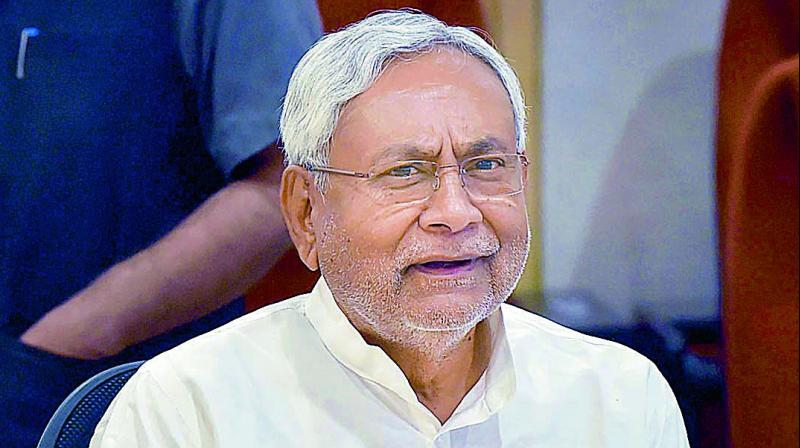
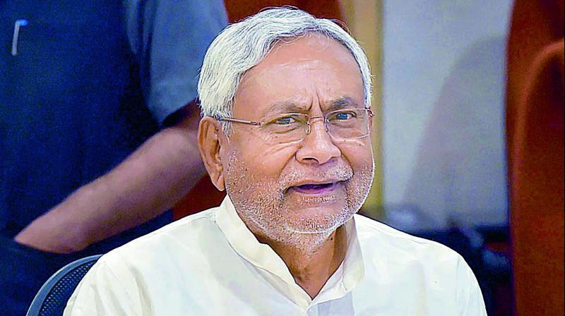

Araria
अररिया
Arwal
अरवल
Aurangabad
औरंगाबाद
Banka
बांका
Begusarai
बेगूसराय
Bhagalpur
भागलपुर
Bhojpur
भोजपुर
Buxar
बक्सर
Darbhanga
दरभंगा
East Champaran
पूर्वी चंपारण
Gaya
गया
Gopalganj
गोपालगंज
Jamui
जमुई
Jehanabad
जहानाबाद.jpg)
Kaimur (Bhabua)
कैमूर (भभुआ)
Katihar
कटिहार
Khagaria
खगड़िया
Kishanganj
किशनगंज
Lakhisarai
लखीसराय
Madhepura
मधेपुरा
Madhubani
मधुबनी
Munger
मुंगेर
Muzaffarpur
मुजफ्फरपुर
Nalanda
नालंदा
Nawada
नवादा
Patna
पटना
Purnia
पूर्णिया
Rohtas
रोहतास
Saharsa
सहरसा
Samastipur
समस्तीपुर
Saran
सारण
Sheikhpura
शेखपुरा
Sheohar
शिवहर
Sitamarhi
सीतामढ़ी
Siwan
सिवान
Supaul
सुपौल
Vaishali
वैशाली
West Champaran
पश्चिमी चंपारण